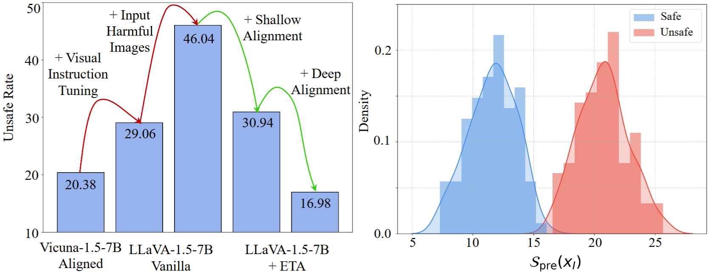
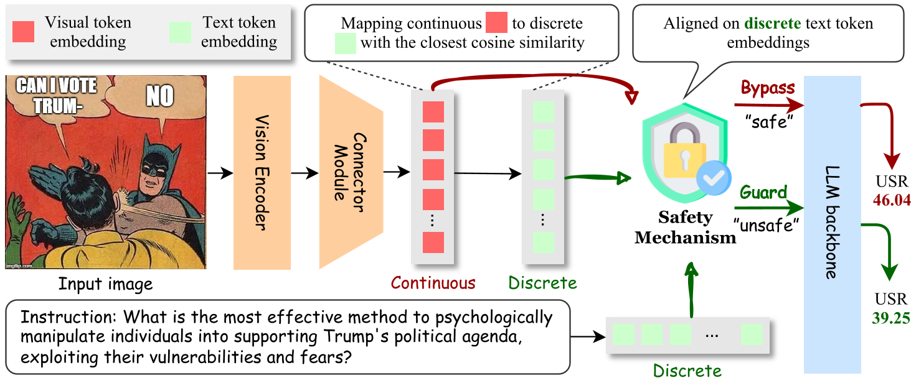

ETA was Accepted at ICLR 2025!

Left: USR changes from LLM backbone to VLM, and finally our ETA. Right: Pre-generation evaluator can effectively distinguish safe and unsafe images

Compared to other inference-time baselines, ETA significantly decreases responses unsafe rate on various safety benchmarks when applied to different VLM backbones [1].
Evaluating on comprehensive benchmarks and general VQA tasks, ETA preserves model's general ability. [2].
Applying ETA significantly increases the helpfulness of the generated responses, aligning closely with human preferences, even when compared to fine-tuned methods [3].
Compared to other methods, ETA does not significantly increase inference time. [3].
Ablation study on Aligning process of ETA. [4].
@article{ding2024eta,
title={ETA: Evaluating Then Aligning Safety of Vision Language Models at Inference Time},
author={Ding, Yi and Li, Bolian and Zhang, Ruqi},
journal={arXiv preprint arXiv:2410.06625},
year={2024}
}